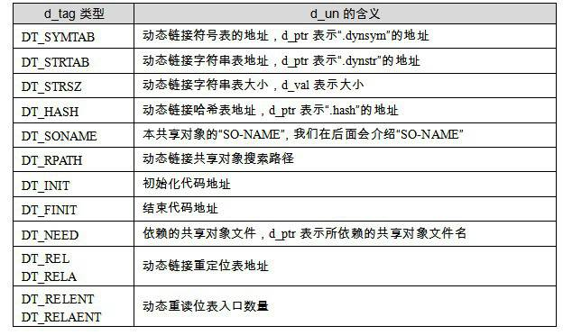
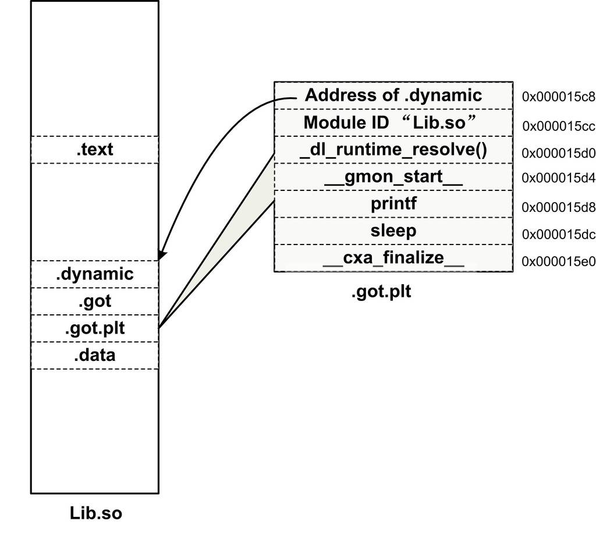
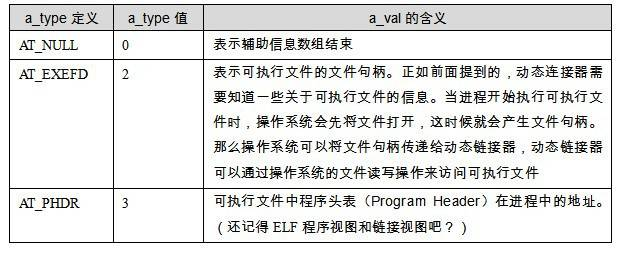
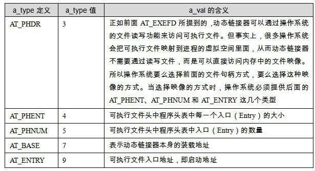
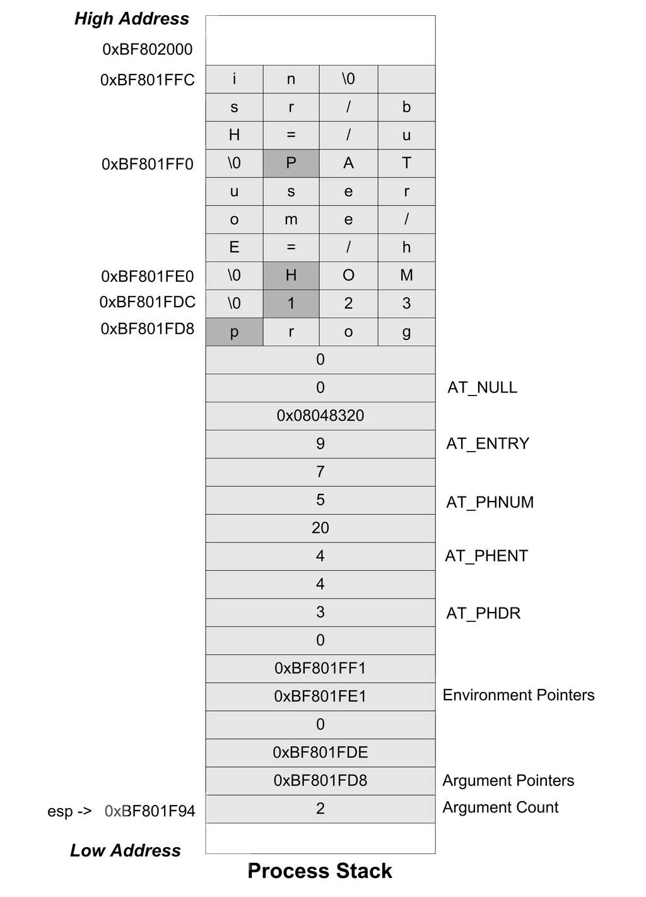

7.5 動態連結相關結構
在瞭解了共享物件的絕對地址引用問題以後，我們基本上對動態連結的原理有了初步的瞭解，接下來的問題就是整個動態連結具體的實現過程了。動態連結在不同的系統上有不同的實現方式，ELF 的動態連結實現方式比PE稍微簡單一點，在這裡我們還是先介紹ELF的動態連結機制在Linux下的實現，最後我們會在專門的章節中介紹PE在Windows下的動態連結機制和它們的區別。
我們在前面的章節已經看到，動態連結情況下，執行檔的載入與靜態連結情況基本一樣。首先作業系統會讀取執行檔的頭部，檢查檔案的合法性，然後從頭部中的“Program Header”中讀取每個“Segment”的虛擬地址、檔案地址和屬性，並將它們對映到程式虛擬空間的相應位置，這些步驟跟前面的靜態連結情況下的載入基本無異。在靜態連結情況下，作業系統接著就可以把控制權轉交給執行檔的入口地址，然後程式開始執行，一切看起來非常直觀。
但是在動態連結情況下，作業系統還不能在載入完執行檔之後就把控制權交給執行檔，因為我們知道執行檔依賴於很多共享物件。這時候，執行檔裡對於很多外部符號的引用還處於無效地址的狀態，即還沒有跟相應的共享物件中的實際位置連結起來。所以在對映完執行檔之後，作業系統會先啟動一個動態連結器（Dynamic Linker）。
在Linux下，動態連結器ld.so實際上是一個共享物件，作業系統同樣透過對映的方式將它載入到程式的地址空間中。作業系統在載入完動態連結器之後，就將控制權交給動態連結器的入口地址（與執行檔一樣，共享物件也有入口地址）。當動態連結器得到控制權之後，它開始執行一係列自身的初始化操作，然後根據當前的環境引數，開始對執行檔進行動態連結工作。當所有動態連結工作完成以後，動態連結器會將控制權轉交到執行檔的入口地址，程式開始正式執行。
7.5.1 “.interp”段
那麼系統中哪個才是動態連結器呢，它的位置由誰決定？是不是所有的*NIX系統的動態連結器都位於/lib/ld.so呢？實際上，動態連結器的位置既不是由系統配置指定，也不是由環境引數決定，而是由ELF執行檔決定。在動態連結的ELF執行檔中，有一個專門的段叫做“.interp”段（“interp”是“interpreter”（直譯器）的縮寫）。如果我們使用objdump工具來檢視，可以看到“.interp”內容：
$ objdump -s a.out a.out: file format elf32-i386 Contents of section .interp: 8048114 2f6c6962 2f6c642d 6c696e75 782e736f /lib/ld-linux.so 8048124 2e3200 .2.
“.interp”的內容很簡單，裡面儲存的就是一個字串，這個字串就是執行檔所需要的動態連結器的路徑，在Linux下，執行檔所需要的動態連結器的路徑幾乎都是“/lib/ld-linux.so.2”，其他的*nix作業系統可能會有不同的路徑，我們在後面還會再介紹到各種環境下的動態連結器的路徑。在Linux的系統中，/lib/ld-linux.so.2通常是一個軟連結，比如在我的機器上，它指向/lib/ld-2.6.1.so，這個才是真正的動態連結器。在Linux中，作業系統在對執行檔的進行載入的時候，它會去尋找載入該執行檔所需要相應的動態連結器，即“.interp”段指定的路徑的共享物件。
動態連結器在Linux下是Glibc的一部分，也就是屬於系統庫級別的，它的版本號往往跟系統中的Glibc庫版本號是一樣的，比如我的系統中安裝的是Glibc 2.6.1，那麼相應的動態連結器也就是/lib/ld-2.6.1.so。當系統中的Glibc庫更新或者安裝其他版本的時候，/lib/ld-linux.so.2這個軟連結就會指向到新的動態連結器，而執行檔本身不需要修改“.interp”中的動態連結器路徑來適應系統的升級。
我們也可以用這個命令來檢視一個執行檔所需要的動態連結器的路徑，在Linux下，往往是如下結果：
$ readelf -l a.out | grep interpreter
[Requesting program interpreter: /lib/ld-linux.so.2]
而當我們在FreeBSD 4.6.2下執行這個命令時，結果是：
$ readelf -l a.out | grep interpreter
[Requesting program interpreter: /usr/libexec/ld-elf.so.1]
64位的Linux下的執行檔是：
$ readelf -l a.out | grep interpreter
[Requesting program interpreter: /lib64/ld-linux-x86-64.so.2]
7.5.2 “.dynamic”段
類似於“.interp”這樣的段，ELF中還有幾個段也是專門用於動態連結的，比如“.dynamic”段和“.dynsym”段等。要了解動態連結器如何完成連結過程，跟前面一樣，從瞭解ELF檔案中跟動態連結相關的結構入手將會是一個很好的途徑。ELF檔案中跟動態連結相關的段有好幾個，相互之間的關係也比較複雜，我們先從“.dynamic”段入手。
動態連結ELF中最重要的結構應該是“.dynamic”段，這個段裡面儲存了動態連結器所需要的基本資訊，比如依賴於哪些共享物件、動態連結符號表的位置、動態連結重定位表的位置、共享物件初始化程式碼的地址等。“.dynamic”段的結構很經典，就是我們已經碰到過的ELF中眼熟的結構陣列，結構定義在“elf.h”中：
typedef struct {
Elf32_Sword d_tag;
union {
Elf32_Word d_val;
Elf32_Addr d_ptr;
} d_un;
} Elf32_Dyn;
Elf32_Dyn結構由一個型別值加上一個附加的數值或指標，對於不同的型別，後面附加的數值或者指標有著不同的含義。我們這裡列舉幾個比較常見的型別值（這些值都是定義在“elf.h”裡面的宏），如表7-2所示。

表7-2中只列出了一部分定義，還有一些不太常用的定義我們就暫且忽略，具體可以參考LSB手冊和elf.h的定義。從上面給出的這些定義來看，“.dynamic”段裡面儲存的資訊有點像ELF檔案頭，只是我們前面看到的ELF檔案頭中儲存的是靜態連結時相關的內容，比如靜態連結時用到的符號表、重定位表等，這裡換成了動態連結下所使用的相應資訊了。所以，“.dynamic”段可以看成是動態連結下ELF檔案的“檔案頭”。使用readelf工具可以檢視“.dynamic”段的內容：
$ readelf -d Lib.so Dynamic section at offset 0x4f4 contains 21 entries: Tag Type Name/Value 0x00000001 (NEEDED) Shared library: [libc.so.6] 0x0000000c (INIT) 0x310 0x0000000d (FINI) 0x4a4 0x00000004 (HASH) 0xb4 0x6ffffef5 (GNU_HASH) 0xf8 0x00000005 (STRTAB) 0x1f4 0x00000006 (SYMTAB) 0x134 0x0000000a (STRSZ) 139 (bytes) 0x0000000b (SYMENT) 16 (bytes) 0x00000003 (PLTGOT) 0x15c8 0x00000002 (PLTRELSZ) 32 (bytes) 0x00000014 (PLTREL) REL 0x00000017 (JMPREL) 0x2f0 0x00000011 (REL) 0x2c8 0x00000012 (RELSZ) 40 (bytes) 0x00000013 (RELENT) 8 (bytes) 0x6ffffffe (VERNEED) 0x298 0x6fffffff (VERNEEDNUM) 1 0x6ffffff0 (VERSYM) 0x280 0x6ffffffa (RELCOUNT) 2 0x00000000 (NULL) 0x0
另外Linux還提供了一個命令用來檢視一個程式主模組或一個共用函式庫依賴於哪些共用函式庫：
$ ldd Program1
linux-gate.so.1 => (0xffffe000)
./Lib.so (0xb7f62000)
libc.so.6 => /lib/tls/i686/cmov/libc.so.6 (0xb7e0d000)
/lib/ld-linux.so.2 (0xb7f66000)
這裡可以看到有個linux-gate.so.1的共享物件很特殊，它的載入地址很奇怪，是0xffffe000，這個地址是32位地址空間的末尾4 096位元組，屬於Linux核心地址空間。你在整個檔案系統中都搜尋不到這個檔案，因為它根本不存在於檔案系統中。它實際上是一個核心虛擬共享物件（Kernel Virtual DSO），這涉及到Linux的系統呼叫和核心，我們將在第4部分介紹linux-gate.so.1相關內容。
7.5.3 動態符號表
為了完成動態連結，最關鍵的還是所依賴的符號和相關檔案的資訊。我們知道在靜態連結中，有一個專門的段叫做符號表“.symtab”（Symbol Table），裡面儲存了所有關於該目的檔的符號的定義和引用。動態連結的符號表示實際上它跟靜態連結十分相似，比如前面例子中的Program1程式依賴於Lib.so，引用到了裡面的foobar()函式。那麼對於Program1來說，我們往往稱Program1匯入（Import）了foobar函式，foobar是Program1的匯入函式（Import Function）；而站在Lib.so的角度來看，它實際上定義了foobar()函式，並且提供給其他模組使用，我們往往稱Lib.so匯出（Export）了foobar()函式，foobar是Lib.so的匯出函式（Export Function）。把這種匯入匯出關係放到靜態連結的情形下，我們可以把它們看作普通的函式定義和引用。
為了表示動態連結這些模組之間的符號匯入匯出關係，ELF專門有一個叫做動態符號表（Dynamic Symbol Table）的段用來儲存這些資訊，這個段的段名通常叫做“.dynsym”（Dynamic Symbol）。與“.symtab”不同的是，“.dynsym”只儲存了與動態連結相關的符號，對於那些模組內部的符號，比如模組私有變數則不儲存。很多時候動態連結的模組同時擁有“.dynsym”和“.symtab”兩個表，“.symtab”中往往儲存了所有符號，包括“.dynsym”中的符號。
與“.symtab”類似，動態符號表也需要一些輔助的表，比如用於儲存符號名的字串表。靜態連結時叫做符號字串表“.strtab”（String Table），在這裡就是動態符號字串表“.dynstr”（Dynamic String Table）；由於動態連結下，我們需要在程式執行時查詢符號，為了加快符號的查詢過程，往往還有輔助的符號雜湊表（“.hash”）。我們可以用readelf工具來檢視ELF檔案的動態符號表及它的雜湊表：
$readelf -sD Lib.so
Symbol table for image:
Num Buc: Value Size Type Bind Vis Ndx Name
9 0: 00000310 0 FUNC GLOBAL DEFAULT 9 _init
7 0: 000015ec 0 NOTYPE GLOBAL DEFAULT ABS _edata
4 0: 00000000 685 FUNC GLOBAL DEFAULT UND sleep
2 0: 00000000 0 NOTYPE WEAK DEFAULT UND _Jv_RegisterClasses
1 0: 00000000 0 NOTYPE WEAK DEFAULT UND __gmon_start__
10 0: 0000042c 57 FUNC GLOBAL DEFAULT 11 foobar
6 1: 000015f0 0 NOTYPE GLOBAL DEFAULT ABS _end
11 1: 000004a4 0 FUNC GLOBAL DEFAULT 12 _fini
5 2: 00000000 245 FUNC WEAK DEFAULT UND __cxa_finalize
8 2: 000015ec 0 NOTYPE GLOBAL DEFAULT ABS __bss_start
3 2: 00000000 57 FUNC GLOBAL DEFAULT UND printf
Symbol table of `.gnu.hash' for image:
Num Buc: Value Size Type Bind Vis Ndx Name
6 0: 000015f0 0 NOTYPE GLOBAL DEFAULT ABS _end
7 0: 000015ec 0 NOTYPE GLOBAL DEFAULT ABS _edata
8 1: 000015ec 0 NOTYPE GLOBAL DEFAULT ABS __bss_start
9 1: 00000310 0 FUNC GLOBAL DEFAULT 9 _init
10 2: 0000042c 57 FUNC GLOBAL DEFAULT 11 foobar
11 2: 000004a4 0 FUNC GLOBAL DEFAULT 12 _fini
動態連結符號表的結構與靜態連結的符號表幾乎一樣，我們可以簡單地將匯入函式看作是對其他目的檔中函式的引用；把匯出函式看作是在本目的檔定義的函式就可以了。
7.5.4 動態連結重定位表
共享物件需要重定位的主要原因是匯入符號的存在。動態連結下，無論是執行檔或共享物件，一旦它依賴於其他共享物件，也就是說有匯入的符號時，那麼它的程式碼或資料中就會有對於匯入符號的引用。在編譯時這些匯入符號的地址未知，在靜態連結中，這些未知的地址引用在最終連結時被修正。但是在動態連結中，匯入符號的地址在執行時才確定，所以需要在執行時將這些匯入符號的引用修正，即需要重定位。
我們在前面的地址無關章節中也提到過，動態連結的執行檔使用的是PIC方法，但這不能改變它需要重定位的本質。對於動態連結來說，如果一個共享物件不是以PIC模式編譯的，那麼毫無疑問，它是需要在載入時被重定位的；如果一個共享物件是PIC模式編譯的，那麼它還需要在載入時進行重定位嗎？是的，PIC模式的共享物件也需要重定位。
對於使用PIC技術的執行檔或共享物件來說，雖然它們的程式碼段不需要重定位（因為地址無關），但是資料段還包含了絕對地址的引用，因為程式碼段中絕對地址相關的部分被分離了出來，變成了GOT，而GOT實際上是資料段的一部分。除了GOT以外，資料段還可能包含絕對地址引用，我們在前面的章節中已經舉例過了。
動態連結重定位相關結構
共享物件的重定位與我們在前面“靜態連結”中分析過的目的檔的重定位十分類似，唯一有區別的是目的檔的重定位是在靜態連結時完成的，而共享物件的重定位是在載入時完成的。在靜態連結中，目的檔裡面包含有專門用於表示重定位資訊的重定位表，比如“.rel.text”表示是程式碼段的重定位表，“.rel.data”是資料段的重定位表。
動態連結的檔案中，也有類似的重定位表分別叫做“.rel.dyn”和“.rel.plt”，它們分別相當於 “.rel.text”和“.rel.data”。“.rel.dyn”實際上是對資料引用的修正，它所修正的位置位於“.got”以及資料段；而“.rel.plt”是對函式引用的修正，它所修正的位置位於“.got.plt”。我們可以使用readelf來檢視一個動態連結的檔案的重定位表：
$ readelf -r Lib.so Relocation section '.rel.dyn' at offset 0x2c8 contains 5 entries: Offset Info Type Sym.Value Sym. Name 000015e4 00000008 R_386_RELATIVE 000015e8 00000008 R_386_RELATIVE 000015bc 00000106 R_386_GLOB_DAT 00000000 __gmon_start__ 000015c0 00000206 R_386_GLOB_DAT 00000000 _Jv_RegisterClasses 000015c4 00000506 R_386_GLOB_DAT 00000000 __cxa_finalize Relocation section '.rel.plt' at offset 0x2f0 contains 4 entries: Offset Info Type Sym.Value Sym. Name 000015d4 00000107 R_386_JUMP_SLOT 00000000 __gmon_start__ 000015d8 00000307 R_386_JUMP_SLOT 00000000 printf 000015dc 00000407 R_386_JUMP_SLOT 00000000 sleep 000015e0 00000507 R_386_JUMP_SLOT 00000000 __cxa_finalize $readelf -S Lib.so ... [19] .got PROGBITS 000015bc 0005bc 00000c 04 WA 0 0 4 [20] .got.plt PROGBITS 000015c8 0005c8 00001c 04 WA 0 0 4 [21] .data PROGBITS 000015e4 0005e4 000008 00 WA 0 0 4 ...
在靜態連結中我們已經碰到過兩種型別的重定位入口R_386_32和R_386_PC32，這裡可以看到幾種新的重定位入口型別：R_386_RELATIVE、R_386_GLOB_DAT和R_386_JUMP_SLOT。實際上這些不同的重定位型別表示重定位時有不同的地址計算方法，在前面的靜態連結中已經介紹過了R_386_32和R_386_PC32的地址計算方法，實際上它們已經是比較複雜的重定位型別了。這裡的R_386_RELATIVE、R_386_GLOB_DAT和R_386_JUMP_SLOT都是很簡單的重定位型別。我們先來看看R_386_GLOB_DAT和R_386_JUMP_SLOT，這兩個型別的重定位入口表示，被修正的位置只需要直接填入符號的地址即可。比如我們看printf這個重定位入口，它的型別為R_386_JUMP_SLOT，它的偏移為0x000015d8，它實際上位於“.got.plt”中。我們知道，“.got.plt”的前三項是被系統佔據的，從第四項開始才是真正存放匯入函式地址的地方。而第四項剛好是0x000015c8 + 4 * 3 = 0x000015d4，即“__gmon_start__”，第五項是“printf”，第六項是“sleep”，第七項是“__cxa_finalize”。所以Lib.so的“.got.plt”的結構如圖7-10所示。

當動態連結器需要進行重定位時，它先查詢“printf”的地址，“printf”位於libc-2.6.1.so。假設連結器在全域性符號表裡面找到“printf”的地址為0x08801234，那麼連結器就會將這個地址填入到“.got.plt”中的偏移為0x000015d8的位置中去，從而實現了地址的重定位，即實現了動態連結最關鍵的一個步驟。
類似於R_386_JUMP_SLOT是對“.got.plt”的重定位，R_386_GLOB_DAT是對“.got”的重定位，它跟R_386_JUMP_SLOT一模一樣，在這裡不再詳細介紹了，有興趣的讀者可以自己分析“.rel.dyn”中3個R_386_GLOB_DAT與“.got”的關係，就能很快理解了。
稍微麻煩一點的是R_386_RELATIVE型別的重定位入口，這種型別的重定位實際上就是基址重置（Rebasing）。我們在前面已經分析過，共享物件的資料段是沒有辦法做到地址無關的，它可能會包含絕對地址的引用，對於這種絕對地址的引用，我們必須在載入時將其重定位。比如前面例子中，有一個全域性指標變數被初始化為一個靜態變數的地址：
static int a; static int* p = &a;
在編譯時，共享物件的地址是從0開始的，我們假設該靜態變數a相對於起始地址0的偏移為B，即p的值為B。一旦共享物件被載入到地址A，那麼實際上該變數a的地址為A+B，即p的值需要加上一個載入地址A。R_386_RELATIVE型別的重定位入口就是專門用來重定位指標變數p這種型別的，變數p在載入時需要加上一個載入地址值A，才是正確的結果。
那麼匯入函式的重定位入口是不是只會出現在“.rel.plt”，而不會出現在“.rel.dyn”呢？答案為否。如果某個ELF檔案是以PIC模式編譯的（動態連結的執行檔一般是PIC的），並呼叫了一個外部函式bar，則bar會出現在“.rel.plt ”中；而如果不是以PIC模式編譯，則bar將出現在“.rel.dyn”中。讓我們來看看不使用PIC的方法來編譯，重定位表的結果又會有什麼不一樣呢？
$gcc -shared Lib.c -o Lib.so $readelf -r Lib.so Relocation section '.rel.dyn' at offset 0x2c8 contains 8 entries: Offset Info Type Sym.Value Sym. Name 0000042c 00000008 R_386_RELATIVE 000015c4 00000008 R_386_RELATIVE 000015c8 00000008 R_386_RELATIVE 00000431 00000302 R_386_PC32 00000000 printf 0000043d 00000402 R_386_PC32 00000000 sleep 000015a4 00000106 R_386_GLOB_DAT 00000000 __gmon_start__ 000015a8 00000206 R_386_GLOB_DAT 00000000 _Jv_RegisterClasses 000015ac 00000506 R_386_GLOB_DAT 00000000 __cxa_finalize Relocation section '.rel.plt' at offset 0x308 contains 2 entries: Offset Info Type Sym.Value Sym. Name 000015bc 00000107 R_386_JUMP_SLOT 00000000 __gmon_start__ 000015c0 00000507 R_386_JUMP_SLOT 00000000 __cxa_finalize
可以看到Lib.c中的兩個匯入函式“printf”和“sleep”從“.rel.plt”到了“.rel.dyn”，並且型別也從R_386_JUMP_SLOT變成了R_386_PC32。
而R_386_RELATIVE型別多出了一個偏移為0x0000042c的入口，這個入口是什麼呢？透過對Lib.so的反組譯可以知道，這個入口是用來修正傳給printf的第一個引數，即我們的字串常量“Printing from Lib.so %d\n”的地址。為什麼這個字串常量的地址在PIC時不需要重定位而在非PIC時需要重定位呢？很明顯，PIC時，這個字串可以看作是普通的全域性變數，它的地址是可以透過PIC中的相對當前指令的位置加上一個固定偏移計算出來的；而在非PIC中，程式碼段不再使用這種相對於當前指令的PIC方法，而是採用絕對地址定址，所以它需要重定位。
7.5.5 動態連結時程式堆疊初始化資訊
站在動態連結器的角度看，當作業系統把控制權交給它的時候，它將開始做連結工作，那麼至少它需要知道關於執行檔和本程式的一些資訊，比如執行檔有幾個段（“Segment”）、每個段的屬性、程式的入口地址（因為動態連結器到時候需要把控制權交給執行檔）等。這些資訊往往由作業系統傳遞給動態連結器，儲存在程式的堆疊裡面。我們在前面提到過，程式初始化的時候，堆疊裡面儲存了關於程式執行環境和命令列引數等資訊。事實上，堆疊裡面還儲存了動態連結器所需要的一些輔助資訊陣列（Auxiliary Vector）。輔助資訊的格式也是一個結構陣列，它的結構被定義在“elf.h”：
typedef struct
{
uint32_t a_type;
union
{
uint32_t a_val;
} a_un;
} Elf32_auxv_t;
是不是已經對這種結構很熟悉了？沒錯，跟前面的“.dynamic”段裡面的結構如出一轍。先是一個32位的型別值，後面是一個32位的數值部分。你可能會很奇怪為什麼要用一個union把後面的32位數值包裝起來，事實上這個union沒什麼用，只是歷史遺留而已，可以當作不存在。我們摘錄幾個比較重要的型別值，這幾個型別值是比較常見的，而且是動態連結器在啟動時所需要的，如表7-3所示。


介紹了這麼多關於輔助資訊陣列的結構，我們還沒看到它到底位於程式堆疊的哪個位置呢。事實上，它位於環境變數指標的後面。比如我們假設作業系統傳給動態連結器的輔助資訊有4個，分別是：
AT_PHDR，值為0x08048034，程式表頭位於0x08048034。
AT_PHENT，值為20，程式表頭中每個項的大小為20位元組。
AT_PHNUM，值為7，程式表頭共有7個項。
AT_ENTRY，0x08048320，程式入口地址為0x08048320。
那麼程式的初始化堆疊就如圖7-11所示。
我們可以寫一個小程式來把堆疊中初始化的資訊全部列印出來，程式原始碼如下：
#include <stdio.h>
#include <elf.h>
int main(int argc, char* argv[])
{
int* p = (int*)argv;
int i;
Elf32_auxv_t* aux;
printf("Argument count: %d\n", *(p-1));
for(i = 0; i < *(p-1); ++i) {
printf("Argument %d : %s\n", i, *(p + i) );
}
p += i;
p++; // skip 0
printf("Environment:\n");
while(*p) {
printf("%s\n",*p);
p++;
}
p++; // skip 0
printf("Auxiliary Vectors:\n");
aux = (Elf32_auxv_t*)p;
while(aux->a_type != AT_NULL) {
printf("Type: %02d Value: %x\n", aux->a_type, aux->a_un.a_val);
aux++;
}
return 0;
}

上面的程式中，為什麼使用argv作為基準來定位各個結構的地址，而不是採用argc？提示：傳值和傳址。